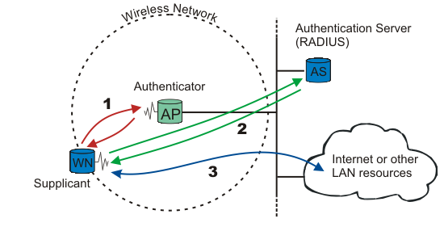

1. Introduction
This document describes the software and procedures to set up and use 802.1X: Port-Based Network Access Control using Xsupplicant with PEAP (PEAP/MS-CHAPv2) as authentication method and FreeRADIUS as back-end authentication server.
If another authentication mechanism than PEAP is preferred, e.g., EAP-TLS or EAP-TTLS, only a small number of configuration options needs to be changed. PEAP/MS-CHAPv2 are also supported by Windows XP SP1/Windows 2000 SP3.
1.1. What is 802.1X?
The 802.1X-2001 standard states:
"Port-based network access control makes use of the physical access characteristics of IEEE 802 LAN infrastructures in order to provide a means of authenticating and authorizing devices attached to a LAN port that has point-to-point connection characteristics, and of preventing access to that port in cases which the authentication and authorization fails. A port in this context is a single point of attachment to the LAN infrastructure." --- 802.1X-2001, page 1.

Figure 802.1X: A wireless node must be authenticated before it can gain access to other LAN resources.
When a new wireless node (WN) requests access to a LAN resource, the access point (AP) asks for the WN's identity. No other traffic than EAP is allowed before the WN is authenticated (the "port" is closed).
The wireless node that requests authentication is often called Supplicant, although it is more correct to say that the wireless node contains a Supplicant. The Supplicant is responsible for responding to Authenticator data that will establish its credentials. The same goes for the access point; the Authenticator is not the access point. Rather, the access point contains an Authenticator. The Authenticator does not even need to be in the access point; it can be an external component.
EAP, which is the protocol used for authentication, was originally used for dial-up PPP. The identity was the username, and either PAP or CHAP authentication [RFC1994] was used to check the user's password. Since the identity is sent in clear (not encrypted), a malicious sniffer may learn the user's identity. "Identity hiding" is therefore used; the real identity is not sent before the encrypted TLS tunnel is up.
After the identity has been sent, the authentication process begins. The protocol used between the Supplicant and the Authenticator is EAP, or, more correctly, EAP encapsulation over LAN (EAPOL). The Authenticator re-encapsulates the EAP messages to RADIUS format, and passes them to the Authentication Server.
During authentication, the Authenticator just relays packets between the Supplicant and the Authentication Server. When the authentication process finishes, the Authentication Server sends a success message (or failure, if the authentication failed). The Authenticator then opens the "port" for the Supplicant.
After a successful authentication, the Supplicant is granted access to other LAN resources/Internet.
See figure 802.1X for explanation.
Why is it called "port"-based authentication? The Authenticator deals with controlled and uncontrolled ports. Both the controlled and the uncontrolled port are logical entities (virtual ports), but use the same physical connection to the LAN (same point of attachment).

Figure port: The authorization state of the controlled port.
Before authentication, only the uncontrolled port is "open". The only traffic allowed is EAPOL; see Authenticator System 1 on figure port. After the Supplicant has been authenticated, the controlled port is opened, and access to other LAN resources are granted; see Authenticator System 2 on figure port.
802.1X plays a major role in the new IEEE wireless standard 802.11i.
1.2. What is 802.11i?
1.2.1. WEP
Wired Equivalent Privacy (WEP), which is part of the original 802.11 standard, should provide confidentiality. Unfortunately WEP is poorly designed and easily cracked. There is no authentication mechanism, only a weak form of access control (must have the shared key to communicate). Read more here.
As a response to WEP broken security, IEEE has come up with a new wireless security standard named 802.11i. 802.1X plays a major role in this new standard.
1.2.2. 802.11i
The new security standard, 802.11i, which was ratified in June 2004, fixes all WEP weaknesses. It is divided into three main categories:
Temporary Key Integrity Protocol (TKIP) is a short-term solution that fixes all WEP weaknesses. TKIP can be used with old 802.11 equipment (after a driver/firmware upgrade) and provides integrity and confidentiality.
Counter Mode with CBC-MAC Protocol (CCMP) [RFC2610] is a new protocol, designed from ground up. It uses AES [FIPS 197] as its cryptographic algorithm, and, since this is more CPU intensive than RC4 (used in WEP and TKIP), new 802.11 hardware may be required. Some drivers can implement CCMP in software. CCMP provides integrity and confidentiality.
802.1X Port-Based Network Access Control: Either when using TKIP or CCMP, 802.1X is used for authentication.
In addition, an optional encryption method called "Wireless Robust Authentication Protocol" (WRAP) may be used instead of CCMP. WRAP was the original AES-based proposal for 802.11i, but was replaced by CCMP since it became plagued by property encumbrances. Support for WRAP is optional, but CCMP support is mandatory in 802.11i.
802.11i also has an extended key derivation/management, described next.
1.2.3. Key Management
1.2.3.1. Dynamic key exchange and management
To enforce a security policy using encryption and integrity algorithms, keys must be obtained. Fortunately, 802.11i implements a key derivation/management regime. See figure KM.

Figure KM: Key management and distribution in 802.11i.
When the Supplicant (WN) and Authentication Server (AS) authenticate, one of the last messages sent from AS, given that authentication was successful, is a Master Key (MK). After it has been sent, the MK is known only to the WN and the AS. The MK is bound to this session between the WN and the AS.
Both the WN and the AS derive a new key, called the Pairwise Master Key (PMK), from the Master Key.
The PMK is then moved from the AS to the Authenticator (AP). Only the WN and the AS can derive the PMK, else the AP could make access-control decisions instead of the AS. The PMK is a fresh symmetric key bound to this session between the WN and the AP.
PMK and a 4-way handshake are used between the WN and the AP to derive, bind, and verify a Pairwise Transient Key (PTK). The PTK is a collection of operational keys:
Key Confirmation Key (KCK), as the name implies, is used to prove the posession of the PMK and to bind the PMK to the AP.
Key Encryption Key (KEK) is used to distributed the Group Transient Key (GTK). Described below.
Temporal Key 1 & 2 (TK1/TK2) are used for encryption. Usage of TK1 and TK2 is ciphersuite-specific.
See figure PKH for a overview of the Pairwise Key Hierarchy.
The KEK and a 4-way group handshake are then used to send the Group Transient Key (GTK) from the AP to the WN. The GTK is a shared key among all Supplicants connected to the same Authenticator, and is used to secure multicast/broadcast traffic.

Figure PKH: Pairwise Key Hierarchy
1.2.3.2. Pre-shared Key
For small office / home office (SOHO), ad-hoc networks or home usage, a pre-shared key (PSK) may be used. When using PSK, the whole 802.1X authentication process is elided. This has also been called "WPA Personal" (WPA-PSK), whereas WPA using EAP (and RADIUS) is "WPA Enterprise" or just "WPA".
The 256-bit PSK is generated from a given password using PBKDFv2 from [RFC2898], and is used as the Master Key (MK) described in the key management regime above. It can be one single PSK for the whole network (insecure), or one PSK per Supplicant (more secure).
1.2.4. TSN (WPA) / RSN (WPA2)
The industry didn't have time to wait until the 802.11i standard was completed. They wanted the WEP issues fixed now! Wi-Fi Alliance felt the pressure, took a "snapshot" of the standard (based on draft 3), and called it Wi-Fi Protected Access (WPA). One requirement was that existing 802.11 equipment could be used with WPA, so WPA is basically TKIP + 802.1X.
WPA is not the long term solution. To get a Robust Secure Network (RSN), the hardware must support and use CCMP. RSN is basically CCMP + 802.1X.
RSN, which uses TKIP instead of CCMP, is also called Transition Security Network (TSN). RSN may also be called WPA2, so that the market don't get confused.
Confused?
Basically:
TSN = TKIP + 802.1X = WPA(1)
RSN = CCMP + 802.1X = WPA2
1.3. What is EAP?
Extensible Authentication Protocol (EAP) [RFC 3748] is just the transport protocol optimized for authentication, not the authentication method itself:
" [EAP is] an authentication framework which supports multiple authentication methods. EAP typically runs directly over data link layers such as Point-to-Point Protocol (PPP) or IEEE 802, without requiring IP. EAP provides its own support for duplicate elimination and retransmission, but is reliant on lower layer ordering guarantees. Fragmentation is not supported within EAP itself; however, individual EAP methods may support this." --- RFC 3748, page 3
1.4. EAP authentication methods
Since 802.1X is using EAP, multiple different authentication schemes may be added, including smart cards, Kerberos, public key, one time passwords, and others.
Some of the most-used EAP authentication mechanism are listed below. A full list of registered EAP authentication types is available at IANA: http://www.iana.org/assignments/eap-numbers.
 | Not all authentication mechanisms are considered secure! |
EAP-MD5: MD5-Challenge requires username/password, and is equivalent to the PPP CHAP protocol [RFC1994]. This method does not provide dictionary attack resistance, mutual authentication, or key derivation, and has therefore little use in a wireless authentication enviroment.
Lightweight EAP (LEAP): A username/password combination is sent to a Authentication Server (RADIUS) for authentication. Leap is a proprietary protocol developed by Cisco, and is not considered secure. Cisco is phasing out LEAP in favor of PEAP. The closest thing to a published standard can be found here.
EAP-TLS: Creates a TLS session within EAP, between the Supplicant and the Authentication Server. Both the server and the client(s) need a valid (x509) certificate, and therefore a PKI. This method provides authentication both ways. EAP-TLS is described in [RFC2716].
EAP-TTLS: Sets up a encrypted TLS-tunnel for safe transport of authentication data. Within the TLS tunnel, (any) other authentication methods may be used. Developed by Funk Software and Meetinghouse, and is currently an IETF draft.
Protected EAP (PEAP): Uses, as EAP-TTLS, an encrypted TLS-tunnel. Supplicant certificates for both EAP-TTLS and EAP-PEAP are optional, but server (AS) certificates are required. Developed by Microsoft, Cisco, and RSA Security, and is currently an IETF draft.
EAP-MSCHAPv2: Requires username/password, and is basically an EAP encapsulation of MS-CHAP-v2 [RFC2759]. Usually used inside of a PEAP-encrypted tunnel. Developed by Microsoft, and is currently an IETF draft.
1.5. What is RADIUS?
Remote Authentication Dial-In User Service (RADIUS) is defined in [RFC2865] (with friends), and was primarily used by ISPs who authenticated username and password before the user got authorized to use the ISP's network.
802.1X does not specify what kind of back-end authentication server must be present, but RADIUS is the "de-facto" back-end authentication server used in 802.1X.
There are not many AAA protocols available, but both RADIUS and DIAMETER [RFC3588] (including their extensions) conform to full AAA support. AAA stands for Authentication, Authorization, and Accounting (IETF's AAA Working Group).